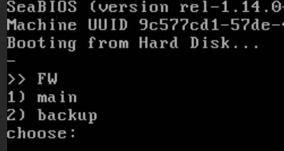

Fiche 01 -- Initialiser un Pare-feu SNS
Procédure de remise à zéro des pare-feu SNS
Cette procédure ne doit évidemment être déroulée que sur un SNS qui aurait déjà été configuré.
Un RAZ du pare-feu peut être fait via la console (sur les VM ou les boitiers physiques), ceci nécessite un redémarrage (reboot). Sur les boîtiers physiques : un appui sur le bouton reset pour les boîtiers physiques permet de restaurer la configuration d'usine et redémarrer en bridge sur toutes les interfaces.
Vous pouvez faire le choix de réinitialiser un boitier physique via l'accès console. Pour cela, installer le driver du câble console sur Windows : https://ftdichip.com/drivers/vcp-drivers/.
Lancer un logiciel permettant l'accès console (Putty, Teraterm, minicom) et utilisant en débit 115200.
Sur une VM :
- démarrer (ou redémarrer) la machine virtuelle et s'authentifier pour accéder à la console en administrateur ;
- saisir la commande
Configuration initiale
La configuration d'usine par défaut du *pare-feu SNS * est la suivante.
Dans une configuration usine, notamment pour les machines virtuelles et les modèles SN310, la première interface (1) du pare-feu SNS physique est nommée « OUT », la seconde « IN » et le reste des interfaces « DMZx ». L'interface « OUT » est une interface externe, utilisée pour connecter le pare-feu SNS à internet et le reste des interfaces sont internes et servent principalement à connecter le pare-feu SNS à des réseaux locaux.
Attention
Attention au brassage ! La distinction interne/externe pour les interfaces permet de se protéger contre les attaques d'usurpation d'adresse IP IPSpoofing.
Le schéma présenté ci-dessous correspond, quant à lui, à un boîtier SN210. Comme vous pouvez le constater, l'organisation des interfaces est différente de celle des machines virtuelles ou des modèles SN310 et supérieur.

Pour initialiser le pare-feu, il faut se brancher sur l'interface IN.
En configuration usine, sur un boîtier physique de type SN210 ou SN310, toutes les interfaces sont incluses dans un bridge dont l'adresse est 10.0.0.254/8. Sur les boîtiers physiques, un serveur DHCP est actif sur toutes les interfaces du bridge et il distribue des adresses IP comprises entre 10.0.0.10 et 10.0.0.100. L'accès à l'interface web de configuration du pare-feu SNS se fait avec l'url : https://10.0.0.254/admin.
- Sur le boîtier
Par défaut, seul le compte système admin (mot de passe par défaut admin), disposant de tous les privilèges sur le boîtier, existe et peut se connecter.
- Sur une VM
La configuration usine lance un dialogue de pré-configuration qui demande de changer le mot de passe par défaut, de configurer vos interfaces, le clavier de la console, etc :
Un premier écran propose un choix qu'il n'est pas nécessaire de valider, le système continue automatiquement :

Un premier redémarrage automatique est fait et la configuration continue :
- Sélectionner 4 pour fr (sur le clavier le chiffre 4 sans utiliser la touche Maj).
- Saisir un mot de passe de 8 caractères minimum avec Maj/min/chiffre/caractères spéciaux.
Passons à la configuration des interfaces réseau :
Même si plusieurs interfaces ont été ajoutées sur l'hyperviseur (Proxmox, VirtualBox ou VmWare), seulement 2 sont modifiables via l'assistant du démarrage.
Les interfaces peuvent être laissées en DHCP ou être configurées via une adresse IP fixe.
Vérifications
Sachant qu'il est déconseillé d'administrer le pare-feu via l'interface OUT, l'idée est de configurer l'interface IN de manière à ce qu'elle se trouve connectée à un réseau logique sur lequel est également connecté (ou peut être connecté) un poste de travail permettant de procéder à l'administration du Stormshield.
Lors de cette configuration, le paramétrage pourra être, bien sûr, modifiée et, par exemple, une autre interface pourra être dédiée à l'administration, nottament via l'usage d'un vlan de management
Pour ce premier démarrage
- Laisser l'interface OUT en DHCP même si aucun serveur DHCP n'est relié au réseau ⇒ répondre « n » ou E
- Laisser l'interface IN en DHCP uniquement s'il y a un serveur DHCP sur le réseau sinon répondre « y » pour mettre une adresse IP accessible via le réseau. Par exemple :
Répondre « n » sur la dernière question, en effet il n'est pas recommandé d'autoriser l'administration sur votre interface OUT.
Votre système est installé avec les valeurs rappelées ci-dessus, vous pouvez tester que la configuration du clavier a bien été prise en compte en saisissant votre login/mdp.
L'interface d'administration est accessible à l'adresse https://@IP-IN/admin/ à partir d'un poste sur le même réseau.
Basculer sur la fiche n°2 pour une première configuration du boîtier ou de la VM.
Plus d'informations
https://documentation.stormshield.eu/SNS/v4/fr/Content/Software_Recovery_via_USB_key/SN150-SN160-SN160W-SN210-SN210W-SN310.htm